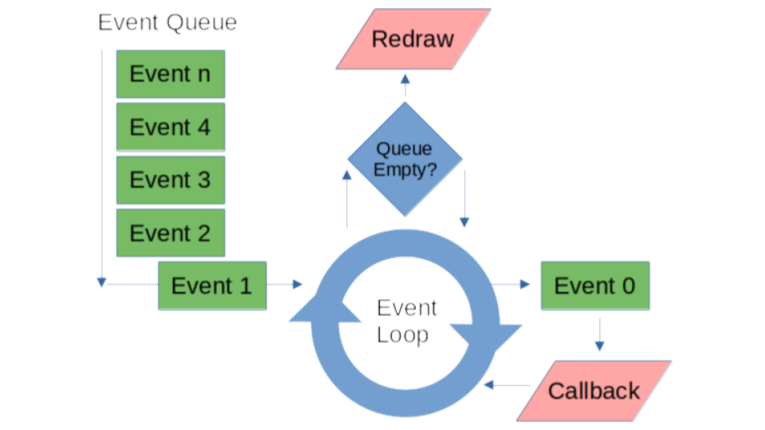
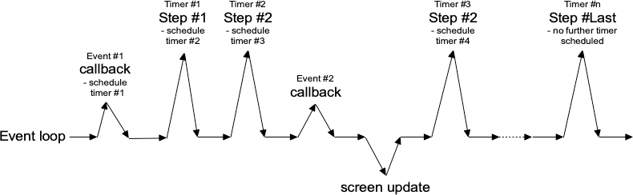

Week 10 Notes¶
Note
Keep an eye weekly pages as they might be updated throughout the week.
Week 10 Overview¶
Quick Links: : Lecture Materials
Lecture Materials¶
Lectures for Week 10 : Live Discussion : Tkinter
Live Discussion¶
Thursday 12/2
Tkinter¶
Videos¶
Notes¶
Let’s talk about Tkinter!
Working with the Event Loop¶
If you recall from our live lecture in week 8, we discussed the event loop and how it is used by graphical toolkits like Tkinter. The following diagram depicts the basic process:

As events are trigger in the user interface, they are added to the event queue and then processed sequentially until the queue is empty. But what if we want to trigger some event programmatically rather than wait for the user to perform some action? In graphical programs, it is quite common to run background operations either while idle or as a user is interacting with the interface. A program may need to poll a remote service for new data, check for changes to existing data or send data somewhere, or perform some safety tasks like saving program state. In most cases, these types of tasks should not depend on the user to initiate them, but instead happen automatically.
Fortunately, most graphical toolkits provide a mechanism for adding procedures to the event queue programmatically. Tkinter’s mechanism is called a timer event. Timer events are similar to input events like click, select, and press, but they can be set in code and triggered by a time based interval. The following diagram from the Tkdocs event loop tutorial depicts how timer events are used in an event loop:

Notice how each timer event schedules a new timer event when it is called. In this sense, we can chain together function calls that we want to occur. But we don’t have to chain different function calls, we can also simply call the same function each time. In pseudo code, a timer event that recalls a function might look something like this:
def timed_fn():
check_mail()
timer_event(5000, timed_fn)
timer_event(5000, timed_fn)
In the pseudo code above, a timer event is created that will call the timed_fn function after 5 seconds (since the parameter is in milliseconds) from the time the event loop is started. timed_fn then performs some operation like checking for new mail and adds itself back to the event loop by calling timer_event again. When run, the resulting code will then automatically call the check_mail function every 5 seconds until the program stops running.
In Tkinter, timer events can be created using the after function. after accepts a delay time, function, and function arguments as its parameters:
def after(self, ms: int, func: None = ...) -> str:
'''
:param ms: The delay in milliseconds before func is called.
:param func: The function to be called when timer event is removed from the event queue
:return: an id that is associated with this timer event
'''
pass
The after function is a member of the Tk class and can be called from any top level widget. Let’s take a look at how to use a timer event in Tkinter by modifying the start code for assignment 5. Comments have been removed for brevity.
main = tk.Tk()
main.title("ICS 32 Distributed Social Demo")
main.geometry("720x480")
main.option_add('*tearOff', False)
MainApp(main)
main.update()
main.minsize(main.winfo_width(), main.winfo_height())
main.mainloop()
Since main is the top level widget for the starter code, we will need to place the call to after from it. We will also assume that there is a method in the MainApp class that we will want to call using a timer event, so we will need to assign the MainApp instance to a variable that we can use with the timer.
main = tk.Tk()
main.title("ICS 32 Distributed Social Demo")
main.geometry("720x480")
main.option_add('*tearOff', False)
app = MainApp(main)
main.update()
main.minsize(main.winfo_width(), main.winfo_height())
main.after(5000, app.check_something)
main.mainloop()
The changes here mean that now once the main loop starts, in 5 seconds the check_something method of the MainApp class will be added to the event queue and called in turn. Next, let’s look at the implementation of the check__something method.
def check_something(self):
# perform some operation
self.root.after(5000,self.check_something)
If you look at starter code, you will notice that when the MainApp class is instantiated, the top level widget is passed as an initialization parameter and then assigned to the class attribute root. In the method above, since root is the same object as main from the earlier code snippet, it is used to place a new timer event on the event queue by calling the after function again. If we run this starter code with these updates, then every 5 seconds the check_something function will be called.
What if we need to stop this operation?
For long running timer events, there may be a desire to cancel them at some point. For example, you might decide that automatically running an operation in the background is something that your user should have control over. So perhaps an auto check option or simply a cancel button is a better way to design your program. Timer events can be cancelled by keeping track of the id returned from each call to after. The timer associated with a particular id can be destroyed by placing a call to after_cancel:
def after_cancel(self, id: str) -> None:
'''
:param id: The id that is associated with the timer event to be cancelled
'''
pass
Whether or not you need to make use of after_cancel is largely up to you and your program design. We won’t go into detail on how to go about implementing cancel support here, but it’s good to know that cancelling a running timer event is possible.
Note that working with timer events is often not as straightforward as it seems in this lecture. In the use cases for this class, the implementations covered here are sufficient. However, as program complexity grows and more events move on and off the queue either through widget interaction or timer events, bugs can appear. So before you start adding tens of timer events to your future programs, take some time to learn about the complexities of the event loop. For this class, we just want to give you the beginning pathways for completing operations like the ones you are asked to complete in your assignments, rather than overwhelm you with the complexities of managing multiprocess operations.
Tkinter Layout¶
Hopefully by now you have all had some time to work on assembling widgets into a Tkinter graphical interface. If so, you have probably noticed that getting widget to behave the way you want is a bit challenging. In this lecture, we will dive into the geometry managers of Tkinter and explore how and when to use each of them.
Tkinter supports three types of geometry managers: pack, place, and grid. If you review the starter code for a5 you will notice that the graphical interface is created using the pack geometry manager. Let’s look at an example:
import tkinter as tk
root = tk.Tk()
root.geometry("400x400")
frm_1 = tk.Frame(master=root, height=100, width=100, background="red")
frm_1.pack()
frm_2 = tk.Frame(master=root, height=100, width=100, background="green")
frm_2.pack()
frm_3 = tk.Frame(master=root, height=100, width=100, background="blue")
frm_3.pack()
root.mainloop()
Working with frames is a good way to start building your program layout, so we’ll start with a simple example where a few frame widgets are added to the top-level window. Since we are dealing with